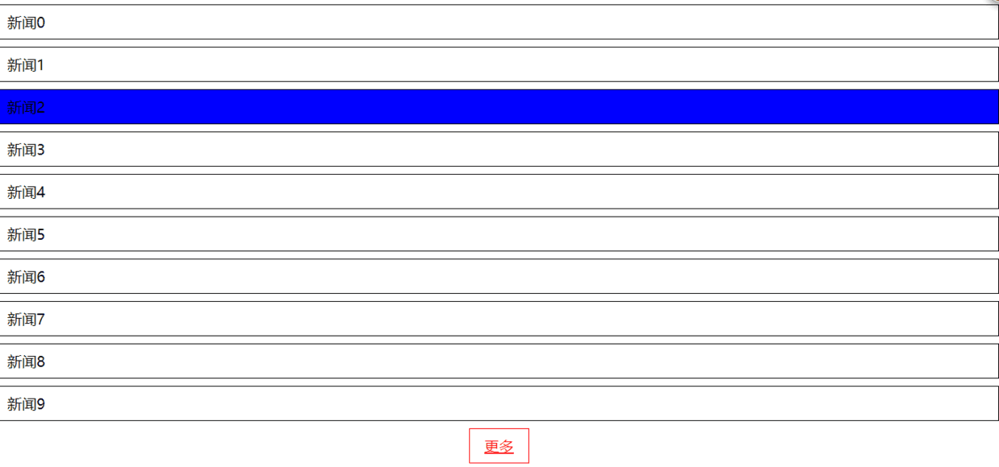

1.jquery中，$(document).ready()是什么意思？
$(document).ready() 在文档对象模型加载完毕后，会触发ready事件，继而执行函数中的代码。与window.onload相似，不过window.onload还要等图片等其他资源加载完成后才会执行函数中的代码。
等价的写法1
2
3$(document).ready(function(){})
$().ready(function(){})
$(function(){})
2.$node.html()和$node.text()的区别
1 | <div> |
3.$.extend的作用和用法？
将两个或更多对象的内容合并到第一个对象target。1
2
3
4
5
6
7
8
9
10
11
12
13
14
15
16
17
18
19
20
21jQuery.extend( [deep ], target, object1 [, objectN ] )
deep： 指示是否深度合并对象，递归拷贝，默认为false。如果该值为true，且多个对象的某个同名属性也都是对象，则该"属性对象"的属性也将进行合并；
target 目标对象，如果附加的对象被传递给这个方法将那么它将接收新的属性，目标对象将被修改，如果不想已有的对象被修改，可把target对象设置成一个空对象{}。
var object1 = {
apple: 0,
banana: { weight: 52, price: 100 },
cherry: 97
};
var object2 = {
banana: { price: 200 },
durian: 100
};
$.extend(oject1,object2) // Merge object2 into object1
此时的
object1 == {
"apple":0,
"banana":{"price":200},
"cherry":97,
"durian":100
}
4. jquery的链式调用
选中元素以后，可以对其进行一系列操作，看起来像一条长长的链条
例如$target.siblings().removeClass(‘block’).addClass(‘hover’)这样简化代码。1
2
3
4
5
6
7
8
9
10
11
12
13
14
15
16
17
18
19
20
21jquery链式调用原理
其原理就是jquery节点在调用jquery方法之后，返回的还是节点本身，所以可以继续调用jquery方法。
类似的应用 写一个函数也能链式调用 add(1)(2)(3) 求和123
要做到需要满足两点：
1. add函数在后续的链式调用时，应该记录之前的加和
2. add函数在每次调用后既要保留自身的引用，又要返回操作结果
function add (num) {
var count = num;
var _b = function(l){
count += l;
return _b
}
_b.valueOf = function(){
return count
}
return _b
}
var c = add(1)(2)(3);
console.log(c) //6
5. juqery中data函数的作用
在匹配元素上存储任意相关数据 或 返回匹配的元素集合中的第一个元素的给定名称的数据存储的值。
.data( key, value )
key 一个字符串，用户存储数据的名称
value 新的数据值；它可以是任意的Javascript数据类型，除了undefined1
2
3
4
5
6
7
8
9
10
11
12
13 <div>
The values stored were
<span></span>
and
<span></span>
</div>
<script>
$("div").data("test", { first: 16, last: "pizza!" });
$("span:first").text($("div").data("test").first);
$("span:last").text($("div").data("test").last);
</script>
The values stored were 16 and pizza!
6.各种jquery中常见的方法
- 给元素$node添加class “active”，给$node删除class“active”
$node.addClass('active').removeClass('active') - 展示元素$node，隐藏元素$node
$node.show().hide() 获取元素$node的属性：id,src,title,并修改
1
2
3
4
5
6
7
8获取
$node.attr('id')
$node.attr('src')
$node.attr('title')
修改
$node.attr('id','newId')
$node.attr('src','newSrc')
$node.attr('title','newTitle')给$node添加自定义属性“data-src”
$node.attr('data-src','../images/img.png')在$ct内部最开头添加元素$node
1
2$ct.prepend($node)
$node.prependTo($ct)在$ct内部最末尾添加元素$node
1
2$ct.append($node)
$node.appendTo($ct)删除$node
$node.remove()- 把$ct里内容清空
$ct.empty() - 在$ct里设置html“”
$ct.html('<div class="btn"></div>') 获取，设置$node的宽度，高度（分别不包括内边距，包括内边距，包括边框，包括外边距）
1
2
3
4
5
6
7
8
9
10
11
12
13
14
15
16
17
18
19
20
21
22
23获取
//不包括内边距
$node.height() //不带单位的数值
$node.css('height') //返回的是带单位的字符串
//包括内边距
$node.innerHeight()
//包括边框
$node.outerHeight()
//包括外边距
$node.outerHeight(true)
设置
$node.height('200px')
$node.css('height','200px')
$node.innerHeight('200px')
$node.outerHeight('200px')
$node.outerHeight('200px',true)获取窗口滚动条垂直滚动距离
$(widnow).scrollTop();获取$node到根节点水平，垂直偏移距离
1
2$node.offset().left //水平 不带单位
$node.offset().top //垂直 不带单位修改$node的样式，字体颜色设置红色，字体大小设置14px
1
2
3
4$node.css({
'color':'red',
'fonz-size':'14px',
})遍历节点，把每个节点里面的文本内容重复一遍
1
2
3$node.each(function(){
$(this).text().+$(this).text();
});从$ct里查找class为“.item”的子元素
1
2$ct.children('.item')
$ct.find('.item')获取$ct里面的所有孩子
$ct.children()对于$node，向上找到class为 “.ct”的父亲， 从该父亲找到”.panel”的孩子
1
$node.parent(".ct").children(".panel")
获取选择元素的数量
$node.length()- 获取当前元素在兄弟中排行
1
2
3
4
5
6
7<ul>
<li id="foo">foo</li>
<li id="bar">bar</li>
<li id="baz">baz</li>
</ul>
$('li').index($("#bar")) // 1
7.操作练习
当点击$btn时，让$btn的背景色变成红色再变成蓝色
1
2
3
4
5
6
7
8
9
10
11<a class="button">123</a>
<script>
$('.button').on("click",function(){
$(this).css("background-color","red")
setTimeout(function(){
$('.button').css("background-color","blue")
},500)
})
</script>
//这里不用animate动画是因为animate动画不能控制background-color，如果一定要用animate的话，就要引用jquery ui库才行当窗口滚动时，获取垂直滚动距离
1
2
3
4
5$(function(){
$(document).scroll(function () {
console.log($(this).scrollTop());
});
})当鼠标放置带$div上，把$div背景改为红色，移出鼠标背景色变为白色
1
2
3
4
5$div.mouseover(function(){
$(this).css("background-color","red")
}).mouseout(function(){
$(this).css("background-color","white")
})当鼠标激活input输入框时输入框变为蓝色，当输入框内容改变时把输入框里的文字小写变为大写，当输入框失去焦点时去掉边框蓝色，控制台展示输入框里的文字
1
2
3
4
5
6
7
8
9
10$('input').focus(function () {
$(this).css('borderColor','blue');
});
$("input").change(function(){
$(this).val().toUpperCase();
});
$('input').blur(function () {
$(this).css('borderColor','');
console.log($(this).val());
})当选择select后，获取用户选择的内容
1
2
3$('select').change(function () {
console.log($(this).val());
})
8.当点击加载更多会加载数据展示到页面
1 | 前端代码 |
